About · 01
Design engineer × builderI build digital products where creative interfaces meet serious engineering. My work spans frontend systems, cloud infrastructure, AI retrieval pipelines, security tooling, mobile apps and algorithmic foundations. The goal isn't more technology. It's technology arranged with enough intent that the result feels obvious. | THINK → DESIGN ↑ ↓ LEARN ← SHIP ↑ ↓ TEST ← BUILD SRM IST · Chennai
B.Tech CSE · Year 3
Merit Scholarship |
Capabilities · 02
 |  |  |
 |  |  |
Selected Work · 03
 |  |
 |  |
 |  |
 |  |
 |  |
 |  |
Stack · 04
How I Work · 05
| 01 / THINK Architecture before implementation. | 02 / CRAFT Interfaces with purpose. | 03 / VERIFY Tests, edges, failure paths. | 04 / SHIP Small releases, real feedback. |